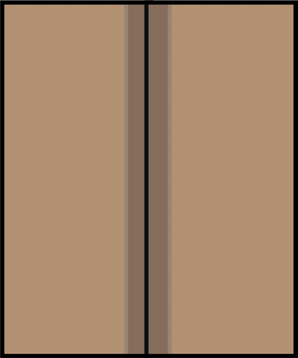

Figure 9:
How to fold two sides
3.
Tape or glue the sides of the paper together;

Figure 10:
Two sides of paper joined with glue
4.
Fold the bottom part of the paper bag. Press it and unfold to leave the fold mark;